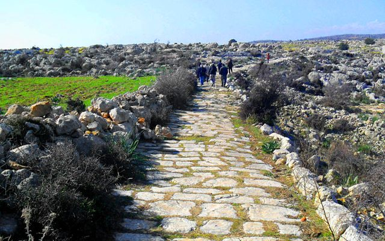
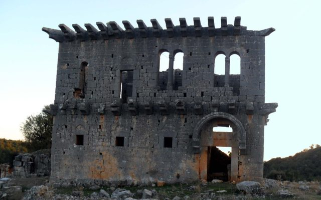
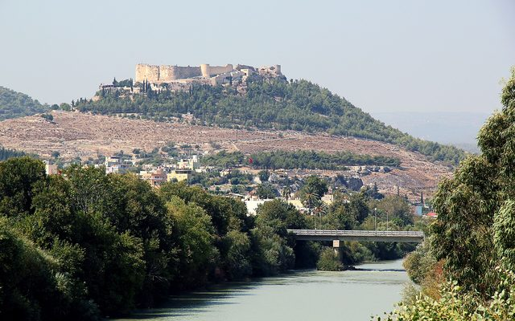

Kültür Varlıkları指南收录了梅尔辛的44个地点：23 考古遗址, 10 博物馆, 7 城堡与历史建筑, 2 宗教建筑, 2 自然景观。下面是重点推荐、地图和完整列表。
⭐ 重点推荐

1 · 梅尔辛 · 考古遗址人像岩
位于锡利夫凯与埃尔代姆利之间的魔鬼溪峡谷，是一组凿刻在悬崖峭壁上的罗马时期人物浮雕。刻有武士、家庭和女性形象的壁龛为墓葬纪念物。沿峡谷边缘下行的小路稍有难度，但景色与氛围值得一去。

2 · 梅尔辛 · 考古遗址阿克卡莱
埃尔代姆利库姆库尤海边的罗马和拜占庭建筑群，包括两层别墅、浴场、蓄水池和仓库，紧邻沿海公路，便于停留参观。

3 · 梅尔辛 · 考古遗址阿内穆里翁遗址
阿内穆里翁位于安纳托利亚最南端的阿纳穆尔角，介于大海与群山之间。最引人注目的是沿山坡分布、由数百座墓室建筑组成的大型墓地，有些墓室墙上仍有彩绘和马赛克痕迹。浴场、音乐厅、剧场、引水渠和教堂遗迹展示了罗马和早期拜占庭时期的繁华生活。遗址旁是海龟筑巢的海滩，傍晚的光线下，面朝大海的墓室令人难忘。
🗺 地图
📍 全部地点 (44)
考古遗址 (23)
人像岩考古遗址阿克卡莱考古遗址阿内穆里翁遗址考古遗址 埃莱乌萨·塞巴斯特古城考古遗址
埃莱乌萨·塞巴斯特古城考古遗址 格克卡莱考古遗址
格克卡莱考古遗址 坎勒迪瓦内遗址考古遗址
坎勒迪瓦内遗址考古遗址 坎勒迪瓦内（卡尼特利斯）考古遗址
坎勒迪瓦内（卡尼特利斯）考古遗址 卡拉卡巴克勒遗址考古遗址
卡拉卡巴克勒遗址考古遗址 克伦德里斯古城考古遗址
克伦德里斯古城考古遗址 梅兹吉特卡莱陵墓考古遗址
梅兹吉特卡莱陵墓考古遗址 奥尔巴古城考古遗址
奥尔巴古城考古遗址 锡利夫凯圣特克拉遗址考古遗址
锡利夫凯圣特克拉遗址考古遗址 索利-庞培城考古遗址
索利-庞培城考古遗址 塔普雷利古城考古遗址
塔普雷利古城考古遗址
塔尔苏斯古罗马大道考古遗址 塔尔苏斯格兹卢库莱土丘考古遗址
塔尔苏斯格兹卢库莱土丘考古遗址 塔尔苏斯克娄巴特拉门与古道考古遗址
塔尔苏斯克娄巴特拉门与古道考古遗址 乌宗贾布尔奇遗址考古遗址
乌宗贾布尔奇遗址考古遗址 亚纳克汗遗址考古遗址
亚纳克汗遗址考古遗址 尤穆克泰佩土丘考古遗址
尤穆克泰佩土丘考古遗址 恰特厄伦遗址考古遗址
恰特厄伦遗址考古遗址 厄居兹吕遗址考古遗址
厄居兹吕遗址考古遗址
于恰亚克勒别墅遗址考古遗址博物馆 (10)
 梅尔辛阿塔图尔克故居博物馆博物馆
梅尔辛阿塔图尔克故居博物馆博物馆 梅尔辛博物馆博物馆
梅尔辛博物馆博物馆 锡利夫凯阿塔图尔克故居与民族志博物馆博物馆
锡利夫凯阿塔图尔克故居与民族志博物馆博物馆 锡利夫凯博物馆博物馆
锡利夫凯博物馆博物馆 锡利夫凯纳尔勒库尤马赛克博物馆博物馆
锡利夫凯纳尔勒库尤马赛克博物馆博物馆 塔尔苏斯圣保罗纪念博物馆博物馆
塔尔苏斯圣保罗纪念博物馆博物馆 阿尔斯兰·埃伊杰双耳瓶博物馆博物馆
阿尔斯兰·埃伊杰双耳瓶博物馆博物馆 塔舒朱阿塔图尔克故居博物馆阿纳穆尔博物馆博物馆梅尔辛塔尔苏斯博物馆博物馆
塔舒朱阿塔图尔克故居博物馆阿纳穆尔博物馆博物馆梅尔辛塔尔苏斯博物馆博物馆城堡与历史建筑 (7)
 格兹内城堡城堡与历史建筑
格兹内城堡城堡与历史建筑 科里科斯与少女城堡城堡与历史建筑
科里科斯与少女城堡城堡与历史建筑 马穆雷城堡城堡与历史建筑
马穆雷城堡城堡与历史建筑 梅尔辛少女城堡（克兹卡莱西）城堡与历史建筑
梅尔辛少女城堡（克兹卡莱西）城堡与历史建筑 纳姆伦城堡城堡与历史建筑
纳姆伦城堡城堡与历史建筑
锡利夫凯城堡城堡与历史建筑 索夫塔城堡城堡与历史建筑
索夫塔城堡城堡与历史建筑